Электрооборудование автомобиля и дополнительное оборудование
Современный автомобиль имеет сложную электронную «начинку», которая называется одним общим словом «электрооборудование». Электрооборудование транспортного средства— это его осветительные приборы, механизм запуска двигателя, охрана машины, отопитель и кондиционер и др. Электричество вырабатывается из источников (аккумулятор и генератор) и передается потребителям.
Потребителями тока в системе электрооборудования легковой машины являются: система пуска двигателя, система зажигания автомобиля, система освещения и сигнализации, контрольно-измерительные приборы и дополнительное оборудование, которое у каждого автомобиля может отличаться.
С системой зажигания двигателя мы уже познакомились ранее (см. Главу 2, раздел «Система зажигания»). Напомним лишь, что для работы двигателя внутреннего сгорания необходима свеча зажигания, дающая электрическую искру, от которой воспламеняется рабочая смесь в цилиндре (в дизельных двигателях используются свечи накаливания). А появляется эта искра благодаря наличию в автомобиле системы электрооборудования. С остальными потребителями электричества мы познакомимся в данной главе. Другими словами, далее мы узнаем о том, как возникает и используется электрическая энергия современного автомобиля.
Источники электрического токаЭлектрический ток в автомобиле вырабатывается из двух источников: аккумуляторная батарея (аккумулятор) и генератор.
Задача аккумулятора(рис. 4.1) — обеспечить электричеством соответствующее оборудование автомобиля при выключенном моторе, а также при работе двигателя на небольших оборотах. Аккумулятор обычно находится в моторном отсеке на специальной металлической полке, но в некоторых моделях автомобилей он может устанавливаться и в салоне.
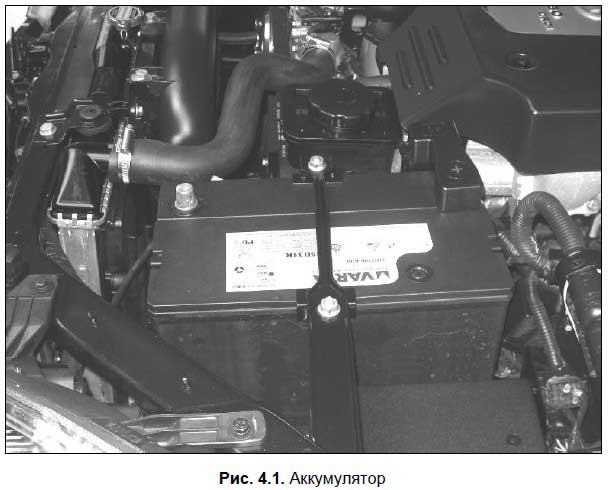
Аккумулятор имеет «плюс» и «минус» на соответствующих полюсах. Минусовой полюс соединен с кузовом автомобиля и обеспечивает, как говорят водители, «выход на массу». Плюсовая клемма соединена с электрической цепью автомобиля, по которой и передается электричество.
Аккумуляторная батарея включает в себя шесть отдельных аккумуляторов, находящихся в одном корпусе и последовательно соединенных между собой в единую электрическую сеть. В каждом аккумуляторе протекают электрохимические процессы, в результате которых получается ток напряжением 2 вольта. Нетрудно посчитать, что в общей сложности на полюсах аккумуляторной батареи образуется постоянный ток напряжением 12 вольт (шесть аккумуляторов по два вольта каждый).
Аккумуляторная батарея имеет маркировку установленного образца. Например, маркировка 6СТ-60А расшифровывается так:
? 6 — количество аккумуляторов в аккумуляторной батарее (для всех легковых автомобилей эта цифра неизменна);
? СТ — тип аккумуляторной батареи, в данном случае — стартерная, позволяющая запускать двигатель с помощью мощного потребителя электроэнергии (стартера);
? 60 — емкость аккумуляторной батареи, которая измеряется в ампер-часах (в рассматриваемом примере — 60 ампер-часов);
? А — обозначение материала, из которого изготовлен корпус аккумуляторной батареи (в рассматриваемом примере — полипропилен).
Чем больше мощности требуется для запуска двигателя, тем большей емкостью должна обладать аккумуляторная батарея. Для стандартных советских «Жигулей» использовались батареи емкостью 55 ампер-часов. А вот для запуска дизельных двигателей такого аккумулятора может не хватить — им необходимо хотя бы 60–65 ампер-часов.
Обычно новый аккумулятор служит в течение 6–7 лет. После этого он подлежит замене, хотя иногда можно продлить срок его службы путем периодической подзарядки с помощью специального зарядного устройства.
Генератор(рис. 4.2) представляет собой источник электрического тока, обеспечивающий электричеством всех потребителей при работе двигателя на больших и средних оборотах. Кроме этого, важнейшей функцией генератора является подзарядка аккумуляторной батареи (тоже при работающем двигателе). Без генератора новый аккумулятор очень быстро разрядится и его использование станет невозможным.
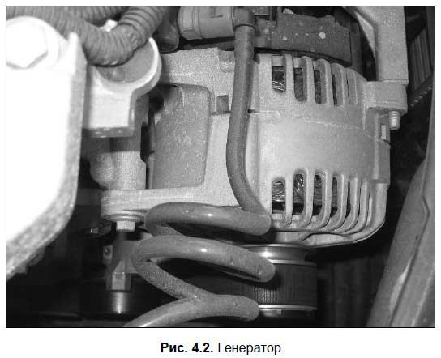
В электрическую цепь автомобиля генератор подключается параллельно аккумуляторной батарее. Следовательно, снабжать потребителей электрическим током и заряжать аккумулятор он будет только тогда, когда напряжение, которое он вырабатывает, будет больше напряжения, выдаваемого аккумуляторной батареей. Это происходит тогда, когда мотор автомобиля работает на оборотах выше холостых: ведь напряжение электрического тока, который производится генератором, напрямую зависит от скорости вращения ротора генератора, имеющего привод от двигателя.
Следует отметить, что иногда напряжение вырабатываемого генератором электрического тока может быть больше, чем необходимо. Для предотвращения такой ситуации в автомобиле используется специальный прибор, который называется регулятор напряжения. Этот прибор функционирует в паре с генератором, ограничивая напряжение производимого им тока и регулирование его в районе 13,6-14,2 вольта. Регулятор напряжения может быть вмонтирован в генератор, а может располагаться в моторном отсеке отдельно от генератора.
Для крепления генератора на двигателе имеется специально предназначенный кронштейн. Генератор имеет привод от коленчатого вала двигателя посредством ременной передачи. На многих машинах с помощью одного ремня создается привод от коленвала на генератор, постоянно работающий вентилятор и на водяной насос (помпу), т. е. все эти агрегаты работают как бы в одной связке, хотя и выполняют совершенно разные функции. Однако это не обязательно — часто генератор имеет отдельный приводной ремень. В любом случае, нужно периодически проверять натяжение ремня и при необходимости регулировать его путем отклонения корпуса генератора. Помните, что недостаточно натянутый ремень, во-первых, издает при работе неприятные свистящие и скрипящие звуки, а во-вторых — быстро выходит из строя.
На панели приборов любого автомобиля обязательно имеется красная лампочка заряда аккумуляторной батареи. Она всегда загорается при включении зажигания и гаснет после запуска двигателя. Если же при работающем двигателе лампочка не погасла — это свидетельствует о проблемах в системе электропитания (вероятно, вышел из строя генератор).
Приборы освещения и сигнализацииПриборы освещенияпредназначены для обозначения габаритов транспортного средства при движении в темное время суток и в условиях недостаточной видимости, а также для освещения дороги и внутренних помещений автомобиля (моторный отсек, салон, багажник). Приборами освещения являются фары (блок-фары), лампы освещения номерного знака, лампы освещения салона, лампа освещения багажника, лампа освещения моторного отсека (подкапотного пространства) и задние фонари.
Блок-фара (рис. 4.3) состоит из корпуса, рассеивателя и отражателя. Внутри корпуса находится лампа, вставленная в гнездо, которая может работать в двух режимах: ближний свет фар и дальний свет фар. Ближний или дальний свет включается с помощью находящегося в салоне переключателя. Также внутри блок-фары имеется лампочка габаритного огня, которая предназначена для обозначения габаритов автомобиля при наличии такой необходимости (для включения габаритов также имеется тумблер).
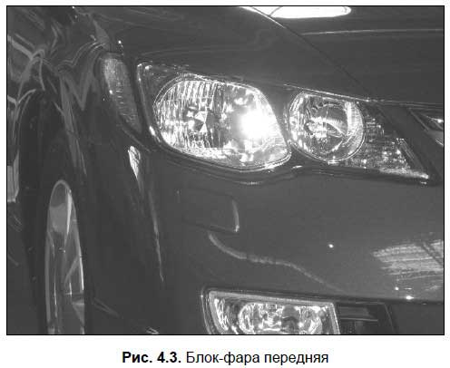
Современные блок-фары часто содержат также лампочку указателя поворота, но она может располагаться и отдельно — здесь все зависит от конкретной модели автомобиля.
Задние фонари (рис. 4.4) в современных машинах также, как правило, выполняются в одном корпусе.
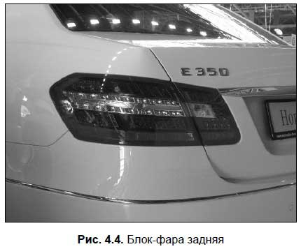
Задний фонарь включает в себя:
? лампы стоп-сигналов (включаются автоматически при нажатии водителем педали тормоза, и выключаются при отпущенной педали);
? лампы заднего хода (загораются автоматически при включении водителем задней передачи, и гаснут при ее выключении);
? указатели поворотов;
? габаритные огни.
Указатели поворотов водитель включает и выключает с помощью специального переключателя, который обычно находится на рулевой колонке. Все одновременно указатели поворотов работают при включении водителем аварийной сигнализации (для этого предназначена специальная кнопка). Порядок применения аварийной световой сигнализации регламентируется действующими ПДД.
Звуковой сигнал — это прибор сигнализации, предназначенный для звукового оповещения других участников дорожного движения о грозящей опасности. Он приводится в действие нажатием специальной кнопки или клавиши, расположенной, как правило, на рулевом колесе. Порядок применения звукового сигнала прописан в ПДД.
Система пуска двигателяДля включения двигателя предназначена система пуска двигателя, состоящая из замка зажигания, стартера с тяговым реле, механизма привода стартера и реле включения стартера.
Запуск двигателя осуществляется с помощью стартера(рис. 4.5).
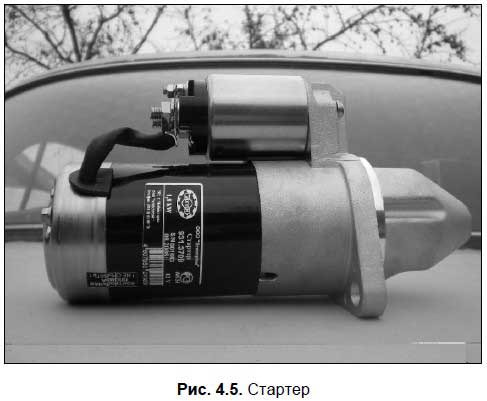
Этот прибор представляет собой электрический двигатель постоянного тока. Когда водитель поворачивает в замке зажигания ключ в положение «Запуск», то электрический ток через реле подается от аккумуляторной батареи на обмотки стартера. В результате срабатывает тяговое реле, специальная шестерня стартера входит в зацепление с маховиком двигателя и проворачивает его. Поскольку зажигание уже включено, то двигатель заводится и начинает работать.
Отметим, что стартер используется исключительно для запуска двигателя; все остальное время этот прибор «отдыхает». Процесс работы стартера можно условно разделить на три ключевых этапа.
Вначале специальная шестерня, расположенная на валу якоря стартера, входит в зацепление с зубчатым венцом маховика двигателя (это возможно благодаря механизму привода). Визуально это можно представить следующим образом: возьмите две шестерни, одна из которых будет иллюстрировать зубчатый венец маховика, а другая — шестерню стартера, и введите их в зацепление. Если провернуть «шестерню стартера», то непременно провернется и «зубчатый венец маховика».
Далее вал стартера вместе с шестерней, зацепившейся с маховиком, начинает вращаться, в результате чего маховик проворачивается, а следовательно — проворачивается и коленчатый вал двигателя, после чего тот запускается.
Затем, когда водитель завел двигатель и отпустил ключ в замке зажигания, выключив стартер (ключ в положении «Запуск» можно удержать только силой, поскольку он автоматически возвращается обратно), шестерня стартера выходит из зацепления в сторону (зубья шестерни останутся на том же уровне, но только в стороне). В таком положении она находится все время, когда двигатель работает или выключен, и входит в зацепление с маховиком только тогда, когда водитель повернет ключ зажигания в положение «Запуск».
Помни об этом.
Сразу после запуска двигателя необходимо выключить стартер, отпустив ключ в замке зажигания. Принудительное удержание ключа при работающем двигателе в положении «Запуск» может быстро вывести стартер из строя: тяжелый вращающийся венец маховика как минимум просто «перемелет» шестерню стартера. Не исключено, что стартер получит и другие повреждения (сгорит тяговое реле и др.). По этой же причине ни в коем случае нельзя включать стартер при работающем двигателе.
При правильном использовании стартер является довольно надежным прибором, который может служить на протяжении всего срока эксплуатации автомобиля.
Контрольно-измерительные приборы
Для оперативного информирования водителя о состоянии важных узлов и агрегатов автомобиля, текущем скоростном режиме, наличии топлива, количестве пройденного пути и прочих важных факторах в автомобиле предназначены контрольно-измерительные приборы(сокращенно КИП). КИП располагаются в месте, удобном для взгляда водителя, а именно — на панели приборов (приборном щитке), находящейся сразу за рулевым колесом (рис. 4.6).
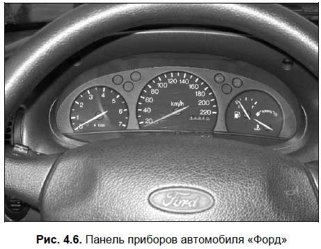
Типичная панель приборов содержит контрольные лампы, одометр (счетчик пробега, причем отдельно для общего и суточного пробега), датчик температуры охлаждающей жидкости, спидометр, датчик уровня топлива и указатель оборотов работы двигателя (тахометр). Также панель приборов может включать в себя и другие КИП — это зависит от модели автомобиля.
Это должен знать каждый.
Для всех КИП действует общее правило: при работающем моторе ни в коем случае не допускается свечение любой красной лампочки (индикатора) либо нахождение стрелки любого указателя в красном секторе. Такие показания КИП информируют водителя о наличии серьезных неполадок в соответствующем агрегате, и до их устранения эксплуатировать автомобиль нельзя.
Контрольные лампы предоставляют водителю сведения о текущем состоянии систем, узлов и агрегатов. В частности при включении зажигания загораются красные лампы зарядки аккумулятора и давления масла — они должны погаснуть после запуска двигателя. Если автомобиль стоит на «ручнике», то на панели приборов при включенном зажигании будет гореть соответствующая красная лампочка, которая погаснет только после отключения стояночной тормозной системы.
При включении ближнего или дальнего света фар на приборном щитке зажигаются лампы, соответственно, зеленого и синего цветов. Когда водитель включает указатель поворота или «аварийку», на панели приборов начинает мигать соответствующий индикатор, что сопровождается характерными звуковыми щелчками.
Тахометр(рис. 4.7) показывает, какое количество оборотов в минуту совершает коленвал двигателя при текущем режиме работы. Обычно оно измеряется в тысячах, поэтому циферблат содержит цифры 1, 2, 3 и т. д., и когда стрелка указывает на какую-то цифру, следует умножать ее на 1000.
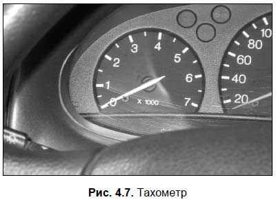
Датчик уровня топлива(рис. 4.8) информирует водителя о количестве топлива, имеющегося в топливном баке в данный момент. Когда топлива остается слишком мало, стрелка приближается к красному сектору, а во многих машинах при этом дополнительно загорается соответствующая лампа (иногда она выглядит как бензоколонка). Не стоит игнорировать тревожные показания датчика — в противном случае вы рискуете заглохнуть на дороге из-за отсутствия топлива в топливном баке.
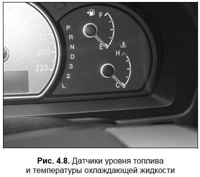
Одометрпоказывает количество пройденных автомобилем километров, причем в современных машинах отдельные счетчики предназначены для общего и для суточного (или за любой произвольный интервал времени) пробега.
Спидометр(рис. 4.9) — это прибор, который информирует водителя о текущем скоростном режиме (попросту говоря, с какой скоростью в данный момент движется автомобиль). Показания данного прибора исключительно важны для выбора правильной скорости и для предотвращения нарушения скоростного режима, установленного на данном участке дороги действующими Правилами дорожного движения.
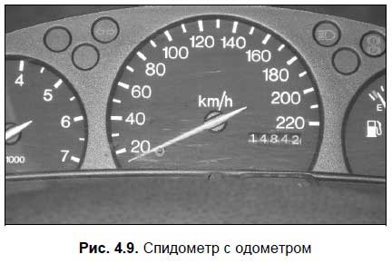
Датчик температуры охлаждающей жидкости(см. рис. 4.8) информирует водителя о том, нормально ли функционирует система охлаждения двигателя. Ранее мы уже говорили, что рабочая температура охлаждающей жидкости должна находиться в пределах 80–90 градусов по Цельсию. Если стрелка датчика перешла в красный сектор — значит, температура жидкости приближается к 100 градусам либо уже достигла ее. В такой ситуации следует немедленно выключить мотор и дать ему остыть.
Дополнительное оборудование современного автомобиляДополнительное оборудование автомобиля предназначено, в основном, для улучшения комфортности и удобства поездки, а также для обеспечения необходимых условий движения. Среди наиболее распространенных видов дополнительного оборудования можно отметить: отопитель салона, кондиционер, магнитолу, стеклоочиститель и стеклоомыватель, устройства подогрева стекол, зеркал и сидений, электрические подъемники стекол и сидений, электрический корректор фар, очиститель и омыватель фар, холодильник, систему спутниковой сигнализации и др.
Отопитель салона по-простому называется «печка», без него в большинстве российских регионов можно эксплуатировать автомобиль не более трех-четырех месяцев (иначе можно просто замерзнуть). Также отопитель применяется для обдува стекол, устраняя появившийся на них конденсат (так называемое «запотевание»). Когда перегревается двигатель автомобиля, иногда помогает включение печки на полную мощность.
Стеклоочиститель и стеклоомыватель обеспечивают видимость во время движения в дождь или снегопад, а также при езде по грязным дорогам.
Учтите.
ПДД запрещают эксплуатацию транспортного средства, если у него не работают конструктивно предусмотренные стеклоочистители и стеклоомыватели.
Системой подогрева стекол и зеркал оборудованы далеко не все машины (это не касается заднего стекла — оно у всех современных автомобилей имеет подогрев). Эти устройства помогают быстро удалить лед и снег со стекол и зеркал автомобиля. Система подогрева сидений также имеется далеко не у всех машин, но если она есть, то зимой садиться в холодную машину будет намного приятнее.
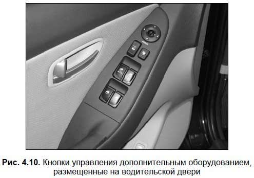
Также популярным устройством является кондиционер. В жаркую погоду этот прибор способен превратить утомительную езду в машине под палящим солнцем в настоящее удовольствие. Особую важность наличие кондиционера имеет для людей, которые склонны к укачиванию при езде в автомобиле (например, пожилые люди или дети). С другой стороны, пользоваться кондиционером следует с осторожностью, поскольку велик риск простудиться.
Электрический корректор фар (рис. 4.11) имеют многие современные иномарки. Этот прибор позволяет водителю со своего места подкорректировать направление света фар — повыше или пониже.
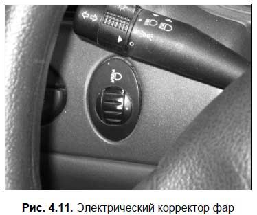
Очиститель и омыватель фар не являются устройствами, которыми должен быть оборудован каждый современный автомобиль (в отличие от очистителя и омывателя ветрового стекла). Но при движении по грязным дорогам эти устройства очень удобны, поскольку позволяют очистить фары от грязи прямо во время движения.